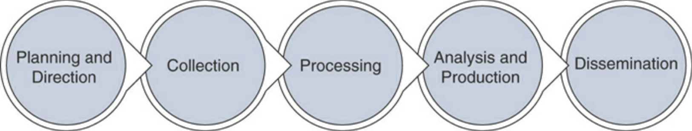

Defining Threats, Vulnerabilities, & Exploits
Threat
A threat is any potential danger to an asset. A threat vector/agent is the path used by the entity (person, device, etc.) to perform the attack.
Vulnerability
A vulnerability is a weakness in the system design, implementation, software, or code, or lack of a mechanism:
Applications: Applications might be configured for usability rather than for security. Applications might be in need of a patch or update. Attackers targeting applications have a target-rich environment to examine.
Operating Systems: Attackers can search for vulnerabilities in OSs that have not been patched or updated.
Hardware: Mitigation of a hardware vulnerability might require patches to microcode (firmware) as well as the OS or other system software. Spectre and Meltdown are examples of hardware vulnerabilities. They take advantage of a feature called “speculative execution” common to most modern processor architectures.
Misconfiguration: The configuration file and configuration setup for the device or software may be misconfigured or may be deployed in an unsecure state. This might be open ports, vulnerable services, or misconfigured network devices.
Shrinkwrap Software: This is the application or executable file that is run on a workstation or server. When installed on a device, it can have tons of functionality or sample scripts or code available.
The Common Vulnerabilities and Exposures (CVE http://cve.mitre.org) is a collection or vendors, security researchers, and vulnerability coordination centres to identify threats that are disclosed to public. CVE is an industry-wide standard. Sponsored by US-CERT, the office of Cybersecurity and Communications at the U.S. Department of Homeland Security, CVE operates as DHS’s Federally Funded Research and Development Centre (FFRDC), MITRE has copyrighted the CVE list to benefit the community to keep it free and open. They oversee the CVE Naming Authortiies (CNAs) and provide impartial technical guidance to the CVE Editorial Board. The CVE’s goal is to make it easier to share data across tools, vulnerability repos, and security services.
Exploit
An exploit refers to a piece of software, a tool, a technique, or a process that takes advantage of a vulnerability that leads to access, privilege escalation, loss of integrity, or denial of service on a computer system.
A zero-day exploit is when no one knows that the vulnerability exists, and it is exploited.
People trade exploits for malicious intent in the dark web (or darknet), which is an overlay of networks and systems that use the Internet, but require specific software and configurations to access it.
The darknet is a small part of the deep web, which is a collection of information and systems on the Internet that is not indexed by web search engines.
Security researches share POC exploits in public spaces, such as The Exploit Database (or Exploit-DB) and GitHub. Offensive Security maintain https://www.exploit-db.com.
SearchSploit https://www.exploit-db.com/searchsploit is a CLI tool to search for known exploits.
Risk, Assets, Threats, & Vulnerabilities
Risk is the probability or likelihood of the occurrence or realisation of a threat. There are three basic elements of risk: assets, threats, and vulnerabilities.
An asset is any item of economic value owned by an individual or corporation.
A threat sets the stage for risk and is any agent, condition, or circumstance that could potentially cause harm, loss, or damage, or compromise an IT asset or data asset. Threats can be categorised as events that can affect the confidentiality, integrity, or availability of the organisation’s assets. Examples of threats:
Natural Disasters, weather, and catastrophic damage: Hurricanes, storms, weather outages, fire, flood, earthquakes, and other natural events compose an ongoing threat.
Hacker attacks: An insider or outside who is unauthorised and purposely attacks an organisation’s infrastructure, components, systems, or data.
Cyberattack: Attacks that target critical national infrastructures such as water plants, electric plants, gas plants, oil refineries, gasoline refineries, nuclear power plants, waste management plants, and soon. Stuxnet is an example of one such tool designed for just such a purpose.
Viruses and malware: An entire category of software tools that are malicious and are designed to damage or destroy a system or data.
Disclosure of confidential information: Anytime a disclosure of confidential information occurs, it can be a critical threat to an organisation if such disclosure causes loss of revenue, causes potential liabilities, or provides a competitive advantage to an adversary, For instance, if your organisation experiences a breath and detailed customer information is exposed (for example, personally identifiable information [PII]),such a breach could have potential liabilities and loss of trust from your customers. Another example is when a threat actor steals source code or design documents and sells them to your competitors.
Denial of service (DoS) or distributed DoS (DDoS) attacks: An attack against availability that is designed to bring the network, or access to a particular TCP/IP host/server, to its knees by flooding it with useless traffic. Today, most DoS attacks are launched via botnets, whereas in the past tools such as the Ping of Death or Teardrop may have been used. Like malware, hackers constantly develop new tools so that Storm and Mariposa, for example, are replaced with other, more current threats.
Defining Threat Actors
Threat actors are the individuals (or group of individuals) who perform an attack or are responsible for a security incident that impacts or has the potential of impacting an organisation or individual.
Script kiddies: People who use existing “scripts” or tools to hack into computers and networks. They lack the expertise to write their own scripts.
Organized crime groups: Their main purpose is to steal information, scam people, and make money.
State sponsors and governments: These agents are interested in stealing data, including intellectual property and research-and-development data from major manufacturers, government agencies, and defense contractors.
Hacktivists: People who carry out cybersecurity attacks aimed at promoting a social or political cause.
Terrorist groups: These groups are motivated by political or religious beliefs.
A hacker is a person who enjoys the understanding the internal workings of a system, computer, and computer network and seeks to understand everything about the system. A cracker is a criminal hacker who seek to compromise the security of a system without the permission from an authorised party.
White hat hackers: These individuals perform ethical hacking to help secure companies and organisations. Their belief is that you must examine your network in the same manner as a criminal hacker to better understand its vulnerabilities.
Black hat hackers: These individuals perform illegal activities, such as organised crime.
Gray hat hackers: These individuals usually follow the law but sometimes venture over to the darker side of black hat hacking. It would be unethical to employ these individuals to perform security duties for your organisation because you are never quite clear where they stand.
Threat Intelligence
https://github.com/The-Art-of-Hacking/h4cker
Threat intelligence is referred to as the knowledge about an existing or emerging threat to assets, including networks and systems. Threat intelligence includes context, mechanisms, indicators of compromise (IoCs), implications, and actionable advice. Its primary purpose is to inform business decisions regarding the risks and implications associated with threats.
The Threat Intelligence Process:
Standards of threat intelligence information:
Structured Threat Information eXpression (STIX): An express language designed for sharing of cyber-attack information. STIX details can contain data such as the IP addresses or domain names of command-and-control servers (often referred to C2 or CnC), malware hashes, and so on. STIX was originally developed by MITRE and is now maintained by OASIS. You can obtain more information at http://stixproject.github.io.
Trusted Automated eXchange of Indicator Information (TAXII): An open transport mechanism that standardises the automated exchange of cyber-threat information. TAXII was originally developed by MITRE and is now maintained by OASIS. You can obtain more information at http://taxiiproject.github.io.
Cyber Observable eXpression (CybOX): A free standardised schema for specification, capture, characterisation, and communication of events of stateful properties that are observable in the operational domain. CybOX was originally developed by MITRE and is now maintained by OASIS. You can obtain more information at https://cyboxproject.github.io.
Open Indicators of Compromise (OpenIOC): An open framework for sharing threat intelligence in a machine-digestible format. Learn more at http://www.openioc.org.
Open Command and Control (OpenC2): A language for the command and control of cyber-defence technologies. OpenC2 Forum was a community of cybersecurity stakeholders that was facilitated by the U.S. National Security Agency. OpenC2 is now an OASIS technical committee (TC) and specification. You can obtain more information at https://www.oasis-open.org/committees/tc_home.php?wg_abbrev=openc2.
Viruses and Worms
A virus needs a host program or file to infect and require some type of human interaction. A worm can travel from system to system without human interaction. When a worm executes, it can replicate again and infect even more systems. For example, a worm can email itself to everyone in your address book and then repeat this process again and again from each user’s computer it infects. That massive amount of traffic can lead to a denial of service very quickly. Spyware is considered another type of malicious software. In many ways, spyware is similar to a Trojan because most users don’t know that the program has been installed, and the program hides itself in an obscure location. Spyware steals information from the user and also eats up bandwidth. If that’s not enough, spyware can also redirect your web traffic and flood you with annoying pop-ups.
Types and Transmission Methods
Viruses depend on people to spread them, such as booting a computer, executing programs, or opening email attachments. Malware propagates through the computer world in the following ways:
Master boot record infection: This is the original method of attack. It works by attacking the master boot record of the hard drive.
BIOS infection: This could completely make the system inoperable or the device could hang before passing Power On Self-Test (POST).
File infection: This includes malware that relies on the user to execute the file. Extensions such as .com and .exe are usually used. Some form of social engineering is normally used to get the user to execute the program. Techniques include renaming the program or trying to mask the .exe extension and make it appear as a graphic (.jpg, .bmp, .png, .svg, and the like).
Macro infection: Macro viruses exploit scripting services installed on your computer. Manipulating and using macros in Microsoft Excel, Microsoft Word, and Microsoft PowerPoint documents have been very popular in the past.
Cluster: This type of virus can modify directory table entries so that it points a user or system process to the malware and not the actual program.
Multipartite: This style of virus can use more than one propagation method and targets both the boot sector and program files. One example is the NATAS (Satan spelled backward) virus.
Fast infection is when malware spreads quickly, infecting any file that they are capable of infecting. Sparse infection is when malware spread rate is reduced, usually loaded into RAM.
Examples:
Flame (year 2012) has the ability to spread to other systems over the local network, record audio, screenshots, keystrokes, and turn computers into bluetooth beacons and download data from other bluetooth-enabled computers.
Polymorphic viruses can change their signature every time it infects a file, making it harder for antiviruses to detect.
A virus hoax is nothing more than a chain letter, meme, or email that encourages you to forward it to your friends to warn them of impending doom or some other notable event. To convince readers to forward the hoax, the email will contain some official-sounding information that could be mistaken as valid.
Malware Payloads
Malware must place their payload somewhere. Prepender malware infects programs by placing the viral code at the beginning of the infected file, whereas appender malware places its code at the end of the infected file. Both methods leave the file intact, with the malicious code added to the beginning or end of the file. All viruses have a search routine and an infection routine:
Search routine: The search routine is responsible for locating new files, disk space, or RAM to infect. The search routine could include “profiling.” Profiling could be used to identify the environment and morph the malware to be more effective and potentially bypass detection.
Infection routine: The search routine is useless if the virus doesn’t have a way to take advantage of these findings. Therefore, the second component of a virus is an infection routine. This portion of the virus is responsible for copying the virus and attaching it to a suitable host. Malware could also use a re-infect/restart routine to further compromise the affected system.
Payload: Most viruses don’t stop here and also contain a payload. The purpose of the payload routine might be to erase the hard drive, display a message to the monitor, or possibly send the virus to 50 people in your address book. Payloads are not required, and without one, many people might never know that the virus even existed.
Antidetection routine: Many viruses might also have an antidetection routine. Its goal is to help make the virus more stealth-like and avoid detection.
Trigger routine: The goal of the trigger routine is to launch the payload at a given date and time. The trigger can be set to perform a given action at a given time.
Trojans
Trojans are programs that pretend to do one thing but, when loaded, actually perform another, more malicious act. Trojans gain their name from Homer’s epic tale The Iliad https://en.wikipedia.org/wiki/Trojan_Horse. They present themselves as something you want, such as an email with a PDF, Word document, etc. Unlike a virus or worm, Trojans cannot spread themselves. They rely on the uninformed user.
Trojan Types
Trojans are hard to place as they generally have more than one function, but here’s a list of examples:
Remote access: Remote-access Trojans (RATs) allow the attacker full control over the system. Poison Ivy is an example of this type of Trojan. Remote-access Trojans are usually set up as client/server programs so that the attacker can connect to the infected system and control it remotely.
Data hiding: The idea behind this type of Trojan is to hide a user’s data. This type of malware is also sometimes known as ransomware. This type of Trojan restricts access to the computer system that it infects, and it demands a ransom paid to the creator of the malware for the restriction to be removed.
E-banking: These Trojans (Zeus is one such example) intercept and use a victim’s banking information for financial gain. Usually, they function as a transaction authorisation number (TAN) grabber, use HTML injection, or act as a form grabber. The sole purpose of these types of programs is financial gain.
Denial of service (DoS): These Trojans are designed to cause a DoS. They can be designed to knock out a specific service or to bring an entire system offline.
Proxy: These Trojans are designed to work as proxy programs that help a hacker hide and allow him to perform activities from the victim’s computer, not his own. After all, the farther away the hacker is from the crime, the harder it becomes to trace him.
FTP: These Trojans are specifically designed to work on port 21. They allow the hacker or others to upload, download, or move files at will on the victim’s machine.
Security-software disablers: These Trojans are designed to attack and kill antivirus or software firewalls. The goal of disabling these programs is to make it easier for the hacker to control the system.
Poison apple/USB key drop: The attacker leaves a thumb drive in the desk drawer or cafeteria of the victim (company). Human nature will ensure the victim will insert the flash disk into their computer.
Trojan Ports and Communication Methods
A backdoor is any type of program that will allow a hacker to connect to the computer without going through the normal authentication process.
Some trojans use overt communications & do not hide the transmission of data as it is moved on to or off of the victim’s computer. Most use covert communication, where the hacker goes through lengths to ensure that the transmission of data is hidden from the victim. Many trojans create backdoors. Some of the programs initiate a connection to the hacker, which is dangerous, because the traffic is moving from the inside-out, which most organisations do not usually protect themselves from, as they are more worried about what’s coming from the outside-in.
Trojan Goals
Trojans are dangerous because they represent a loss of confidentiality, integrity, and availability. Targets of trojans include:
Credit card data: Credit card data and banking information have become huge targets. After the hacker has this information, he can go on an online shopping spree or use the card to purchase services, such as domain name registration.
Electronic or digital wallets: Individuals can use an electronic device or online service that allows them to make electronic transactions. This includes buying goods online or using a smartphone to purchase something at a store. A digital wallet can also be a cryptocurrency wallet (such as Bitcoin, Ethereum, Litecoin, Ripple, and so on).
Passwords: Passwords are always a big target. Many of us are guilty of password reuse. Even if we are not, there is always the danger that a hacker can extract email passwords or other online account passwords.
Insider information: We have all had those moments in which we have said, “If only I had known this beforehand.” That’s what insider information is about. It can give the hacker critical information before it is made public or released.
Data storage: The goal of the Trojan might be nothing more than to use your system for storage space. That data could be movies, music, illegal software (warez), or even pornography.
Advanced persistent threat (APT): It could be that the hacker has targeted you as part of a nation-state attack or your company has been targeted because of its sensitive data. Two examples include Stuxnet and the APT attack against RSA in 2011. These attackers might spend significant time and expense to gain access to critical and sensitive resources.
Trojan Infection Mechanisms
There are many ways to spread malware:
Peer-to-peer networks (P2P): Although users might think that they are getting the latest copy of a computer game or the Microsoft Office package, in reality, they might be getting much more. P2P networks and file-sharing sites such as The Pirate Bay are generally unmonitored and allow anyone to spread any programs they want, legitimate or not.
Instant messaging (IM): IM was not built with security controls. So, you never know the real contents of a file or program that someone has sent you. IM users are at great risk of becoming targets for Trojans and other types of malware.
Internet Relay Chat (IRC): IRC is full of individuals ready to attack the newbies who are enticed into downloading a free program or application.
Email attachments: Attachments are another common way to spread a Trojan. To get you to open them, these hackers might disguise the message to appear to be from a legitimate organization. The message might also offer you a valuable prize, a desired piece of software, or similar enticement to pique your interest. If you feel that you must investigate these attachments, save them first and then run an antivirus on them. Email attachments are the number-one means of malware propagation. You might investigate them as part of your information security job to protect network users. 1
Physical access: If a hacker has physical access to a victim’s system, he can just copy the Trojan horse to the hard drive (via a thumb drive). The hacker can even take the attack to the next level by creating a Trojan that is unique to the system or network. It might be a fake login screen that looks like the real one or even a fake database.
Browser and browser extension vulnerabilities: Many users don’t update their browsers as soon as updates are released. Web browsers often treat the content they receive as trusted. The truth is that nothing in a web page can be trusted to follow any guidelines. A website can send to your browser data that exploits a bug in a browser, violates computer security, and might load a Trojan.
SMS messages: SMS messages have been used by attackers to propagate malware to mobile devices and to perform other scams.
Impersonated mobile apps: Attackers can impersonate apps in mobile stores (for example, Google Play or Apple Store) to infect users. Attackers can perform visual impersonation to intentionally misrepresents apps in the eyes of the user. Attackers can do this to repackage the application and republish the app to the marketplace under a different author. This tactic has been used by attackers to take a paid app and republish it to the marketplace for less than its original price. However, in the context of mobile malware, the attacker uses similar tactics to distribute a malicious app to a wide user audience while minimizing the invested effort. If the attacker repackages a popular app and appends malware to it, the attacker can leverage the user’s trust of their favorite apps and successfully compromise the mobile device.
Watering hole: The idea is to infect a website the attacker knows the victim will visit. Then the attacker simply waits for the victim to visit the watering hole site so the system can become infected.
Freeware: Nothing in life is free, and that includes most software. Users are taking a big risk when they download freeware from an unknown source. Not only might the freeware contain a Trojan, but freeware also has become a favorite target for adware and spyware.
Effects of Trojans
Trojans can have a small to extreme effect on the target system. If the victim becomes aware of the Trojan’s presense, the victim will take countermeasures that threaten the attacker’s ability to keep control of the computer. The hacker could have the ability to reboot, install keyloggers, etc.
Distributing Malware
Modern malware detection becomes more difficult as time goes on. It constantly improves via the below methods:
Wrappers are programs used to combine two or more executables into a single packaged program. Wrappers are also referred to as binders, packagers, and EXE binders because they are the functional equivalent of binders for Windows Portable Executable files.
Packers are similar to programs such as WinZip, Rar, and Tar because they compress files. However, whereas compression programs compress files to save space, packers do this to obfuscate the activity of the malware. The idea is to prevent anyone from viewing the malware’s code until it is placed in memory.
Droppers are software designed to install malware payloads on the victim’s system. Droppers try to avoid detection and evade security controls by using several methods to spread and install the malware payload.
Crypters function to encrypt or obscure the code. Some crypters obscure the contents of the Trojan by applying an encryption algorithm. Crypters can use anything from AES, RSA, to even Blowfish, or might use more basic obfuscation techniques such as XOR, Base64 encoding, or even ROT13. Again, these techniques are used to conceal the contents of the executable program, making it undetectable by antivirus and resistant to reverse-engineering efforts.
Ransomware
Ransomware can propagate like a worm or a virus but is designed to encrypt personal files on the victim’s hard drive until a ransom is paid to the attacker. Ransomware can encrypt specific files, or all files on your system. It can even encrypt the MBR. Well-known examples:
WannaCry
Pyeta
Nyeta
Sodinokibi
Bad Rabbit
Grandcrab
SamSam
CryptoLocker
CryptoDefense
CryptoWall
Spora
Covert Communication
The Trusted Computer Security Evaluation Criteria (TCSEC) was one of the first documents to fully examine the concept of covert communications and attacks. TCSEC divides covert channel attacks into 2 categories:
Covert timing channel attacks: Timing attacks are difficult to detect because they are based on system times and function by altering a component or by modifying resource timing.
Covert storage channel attacks: Use one process to write data to a storage area and another process to read the data.
A covert channel is a way of moving information through a communication channel or protocol in a manner in which it was not intended for.
TCP/IP offers many opportunities for misuse. Two commonly tunnelled protocols are IPv6 and ICMP. Common tools to tunnel over IPv6 include 6tunnel, socat, nt6tunnel, and relay6. Windows misuse relies on several factors:
Incomplete or inconsistent support for IPv6
The IPv6 autoconfiguration capability
Malware designed to enable IPv6 support on susceptible hosts
Malicious application of traffic “tunneling,” a method of Internet data transmission in which the public Internet is used to relay private network data
TCP offers several fields that can be manipulated by an attacker. The TCP process (again…):
A three-step handshake: This ensures that both systems are ready to communicate.
Exchange of control information: During the setup, information is exchanged that specifies maximum segment size.
Sequence numbers: This indicates the amount and position of data being sent.
Acknowledgments: This indicates the next byte of data that is expected.
Four-step shutdown: This is a formal process of ending the session that allows for an orderly shutdown.
A hacker may attempt to use TCP ACK packets as a covert communication channel. Ack-Cmd is an example tool for this.
UDP tunnel tools include:
UDP Tunnel: Also designed to tunnel TCP traffic over a UDP connection. You can find UDP Tunnel at https://code.google.com/p/udptunnel/.
dnscat: Another option for tunneling data over an open DNS connection. You can download the current version, dnscat2, at https://github.com/iagox86/dnscat2.
UDP 53 is most likely open. This is it’s open for hackers. Many times attackers move data using DNS without being detected for days, weeks, or months. They schedule the DNS exfiltration packets in a way that makes it harder for a security analyst or automated tools to detect.
Netcat is one tool that can be used to set up a tunnel to exfiltrate data over HTTP. If HTTPS is the transport, it is difficult for the network administrator to inspect the outbound data. Cryptcat (http://cryptcat.sourceforge.net) can be used to send data over HTTPS.
Keyloggers
Keyloggers are software or hardware devices used to record everything a person types. They enable a hacker to covertly monitor everything a user does. The hacker might send a victim a keystroke-logging-program wrapped in a Trojan. Hardware keyloggers are undetectable except for their physical presence. http://www.keyghost.com
Spyware
Similar to a Trojan, spyware is installed without consent or knowledge, hidden from view, monitors computer & Internet usage, and is configured to run in the background each time the computer boots. It has 2 purposes:
Surveillance: Used to determine your buying habits, discover your likes and dislikes, and report this demographic information to paying marketers.
Advertising: You’re targeted for advertising that the spyware vendor has been paid to deliver. For example, the maker of a rhinestone cell phone case might have paid the spyware vendor for 100,000 pop-up ads. If you have been infected, expect to receive more than your share of these unwanted pop-up ads.
A dropper is another word for a wrapper, which is a standalone program that drops different types of standalone malware to the system. Code is usually hidden in the Registry run keys, Windows startup folder, Windows load= or run= lines found in the Win.ini file, Shell= line found in the Windows System.ini file. Spyware can also change the Hosts file.
Analysing Malware
Two methods to analyse Viruses and other malware:
Static Analysis
Dynamic Analysis
Static Analysis
Decompilation, reverse engineering, and analysis of malicious software. Static analysis uses disassemblers and decompilers to format the data into human-readable format:
IDA Pro: An interactive disassembler that you can use for decompiling code. It’s particularly useful in situations in which the source code is not available, such as with malware. IDA Pro allows the user to see the source code and review the instructions that are being executed by the processor. IDA Pro uses advanced techniques to make that code more readable. You can download and obtain additional information about IDA Pro at https://www.hex-rays.com/products/ida/.
Evan’s Debugger (edb): A Linux cross-platform AArch32/x86/x86-64 debugger. You can download and obtain additional information about Evan’s Debugger at https://github.com/eteran/edb-debugger.
BinText: Another tool that is useful to the malware analyst. BinText is a text extractor that will be of particular interest to programmers. It can extract text from any kind of file and includes the ability to find plain ASCII text, Unicode (double-byte ANSI) text, and resource strings, providing useful information for each item in the optional “advanced” view mode. You can download and obtain additional information about BinText from the following URL: https://www.aldeid.com/wiki/BinText.
UPX: A packer, compression, and decompression tool. You can download and obtain additional information about UPX at https://upx.github.io.
OllyDbg: A debugger that allows for the analysis of binary code where source is unavailable. You can download and obtain additional information about OllyDbg at http://www.ollydbg.de.
Ghidra: A software reverse engineering tool developed by the U.S. National Security Agency (NSA) Research Directorate. You can download and obtain additional information about Ghidra at https://ghidra-sre.org.
Dynamic Analysis
Monitoring and analysis of a computer activity and network traffic, which requires the ability to configure the network device for monitoring, looking for suspicious activity and try not to alert the attacker.
Ways in which the malware can be confined:
Install of a VM
Install a guest operating system on the VM.
Isolate the system from the guest VM.
Verify that all sharing and transfer of data is blocked between the host operating system and the virtual system.
Copy the malware over to the guest operating system and prepare for analysis.
Although some malware can not execute due to the OUI matching a VM vendor or if the malware cannot reach the Internet. You could spoof the MAC address or use FakeNet.
To detect malware on the infected machine, you can check the:
Running processes
Device drivers
Windows services
Startup programs
Operating system files
A sandbox is a standalone environment that allows you to safely view or execute a program while keeping it contained. Websites such as the Cisco Talos File Reputation Lookup site (https://www.talosintelligence.com/reputation) and VirusTotal (https://virustotal.com) allow you to upload files to verify if they may be known malware.
Many techniques can be used to make disassembly challenging:
Encryption
Obfuscation
Encoding
Anti-VM
Anti-debugger